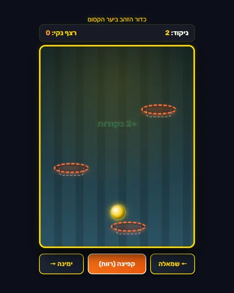
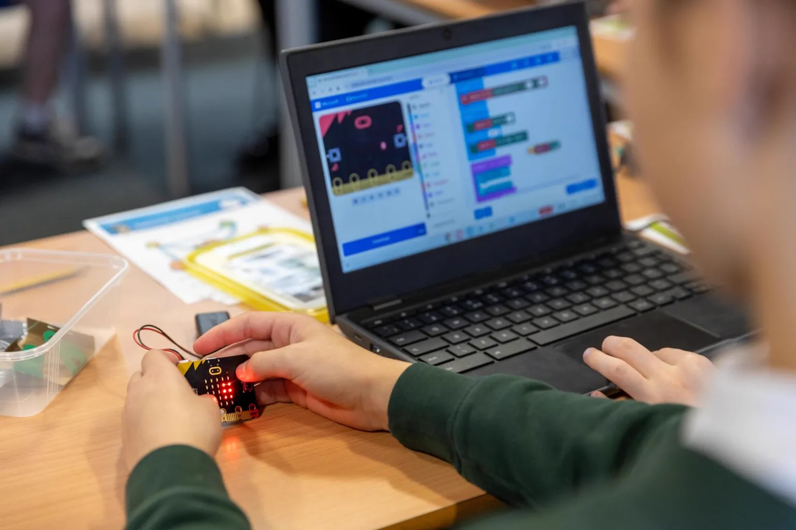

סיכום פעילות: תלמידים במסלול טכנולוגי
דוח ביניים על מה שעשינו בשיעורים עד עכשיו: התלמידים בנו משחקים בעזרת בינה מלאכותית ותכנתו מיקרוביט, מחשב בגודל כף יד.
בדף אפשר לשחק במשחקים ולנסות את הקוד שהתלמידים כתבו.
בונים משחקים עם AI
התלמידים למדו Vibe Coding: בונים משחק בעזרת בינה מלאכותית, בלי לכתוב את הקוד בעצמם. הם תכננו רעיון, תיארו אותו במילים, והבינה המלאכותית כתבה את הקוד. אחר כך שיחקו, מצאו מה לא עובד, וביקשו לתקן.
העבודה נעשתה בסביבה בטוחה שמאושרת על ידי משרד החינוך.
- תכנון
- למדו לפרק רעיון לחלקים לפני שמתחילים.
- ניסוח מדויק
- למדו לכתוב בדיוק מה רוצים שיקרה.
- בדיקה ותיקון
- שיחקו, מצאו באגים, וביקשו לתקן אותם.
פרומפט טוב ופרומפט חלש
ההוראה שכותבים לבינה המלאכותית נקראת פרומפט. התלמידים למדו שככל שהיא מדויקת יותר, התוצאה טובה יותר.
פרומפט חלש
״תעשה לי משחק״
כללי מדי. הבינה המלאכותית לא יודעת מה לבנות, אז היא מנחשת.
ברור: מה רואים, איך שולטים ומה המטרה. ממנו יוצא משחק שעובד, ואז מבקשים שיפור אחד בכל פעם.

מוזמנים לשחק
דוגמאות למשחקים שנבנו בשיעורים. נוח יותר במחשב.

מחשב שלם בכף היד
התלמידים הכירו את המיקרוביט: מחשב זעיר, קטן מכף יד, עם מעבד, מסך, כפתורים, חיישנים ורמקול. הם כתבו לו קוד במחשב, העבירו אותו ללוח בכבל, וראו את הלוח מבצע אותו. בשיעורים הם הפכו אותו למשחקים.
- כתבובנו את הקוד מבלוקים.
- בדקוהריצו בסימולטור ותיקנו.
- העבירוחיברו בכבל, והלוח התחיל לעבוד.
נסו בעצמכם
זו הדמיה של הלוח, עם הקוד שהתלמידים כתבו. לא צריך לוח אמיתי: בוחרים תוכנית ולוחצים.
מה לומדים: משתנה ומספר אקראי.
כאשר שקשוק
הצב יד ל- מספר אקראי מ-1 עד 3
אם יד = 1 הצג נייר
אם יד = 2 הצג אבן
אחרת הצג מספריים
מה לומדים: לולאה ותנאי. לוחצים על A בדיוק כשהנקודה באמצע.
לעולמים
הזז את הנקודה צעד אחד
אם הנקודה בקצה, הפוך כיוון
השהה 220 אלפיות שנייה
כאשר כפתור A נלחץ
אם הנקודה באמצע
הוסף נקודה, והאץ
ניקוד: 0
מה לומדים: לולאה שחוזרת מספר קבוע של פעמים. אם כל הכיתה לוחצת A יחד, כולם רוקדים באותו קצב.
כאשר כפתור A נלחץ
חזור 4 פעמים
הצג צעד שמאלה, השהה 1000
הצג צעד ימינה, השהה 1000
הצג ידיים למעלה, השהה 1000
הצג יד לרצפה, השהה 1000
נקה מסך
מה לומדים: משתנה שסופר. כל צעד מנער את הלוח.
בהתחלה
הצב צעדים ל- 0
כאשר שקשוק
שנה צעדים ב- 1
הצג מספר צעדים
כאשר כפתור A נלחץ
הצב צעדים ל- 0
מה לומדים: חיישן ותנאים. הלוח קורא את הכיוון ומחליט מה להציג.
לעולמים
הצב כיוון ל- כיוון המצפן
אם כיוון קרוב ל-0, הצג N
אם קרוב ל-90, הצג E
אם קרוב ל-180, הצג S
אחרת הצג W
בהמשך השנה גם פלאפי בירד: ציפור שעוברת בין מכשולים, והכפתורים מזיזים אותה.